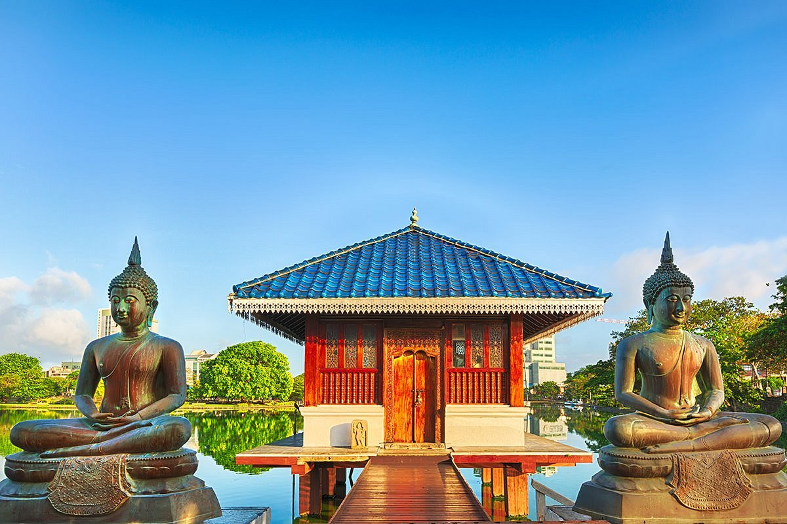
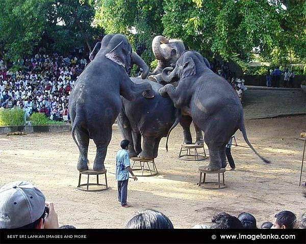
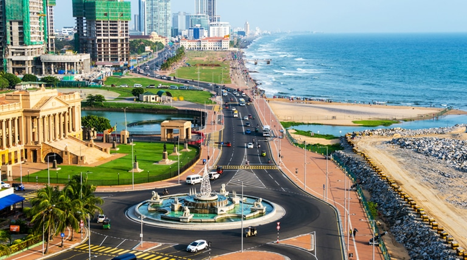
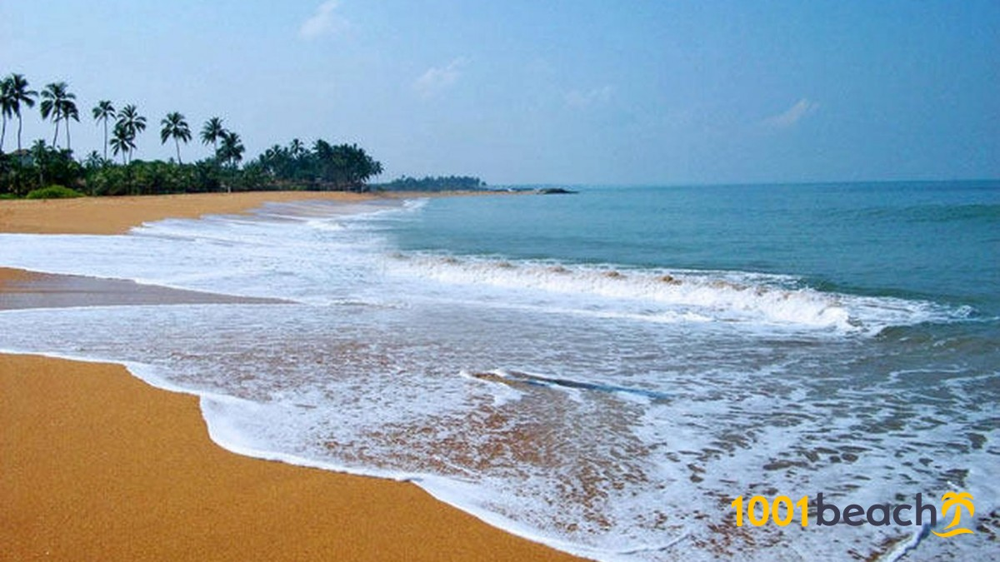

The Western Province is one of the nine provinces of Sri Lanka, the first level administrative division of the country.
The provinces have existed since the 19th century but did not have any legal status until 1987 when the 13th Amendment to the
Constitution of Sri Lanka established provincial councils. The province is the most densely populated province in the country
and is home to the legislative capital Sri Jayawardenepura Kotte as well to Colombo, the nation's administrative and business
center.
1. Gangaramaya (Vihara) Buddhist Temple

Gangaramaya Temple is one of the most important temples in Colombo, Sri Lanka, being a mix of modern architecture and cultural essence.
Located on the Beira Lake, it was completed in the late 19th century.
The temple's architecture demonstrates an eclectic mix of Sri Lankan, Thai, Indian, and Chinese architecture.
This Buddhist temple includes several imposing buildings and is situated not far from the placid waters of Beira Lake on a plot
of land that was originally a small hermitage on a piece of marshy land.
It has the main features of a Vihara (temple), the Cet
iya (Pagada) the Bodhitree, the Vihara Mandiraya, the Seema malaka (assembly hall for monks) and the Relic Chamber. In addition, a
museum, a library, a residential hall, a three storeyed Pirivena, educational halls and an alms hall are also on the premises.
Most notable for tourists is the architecture of the Simamalaka Shrine, which was built with donations from a Muslim
sponsor to the design of Geoffrey Bawa.
Don Bastian (de Silva Jayasuriya Goonewardane, Mudaliyar), a 19th century shipping merch
ant who was seeking suitable land to build a temple for the Matara Sri Dharmarama thero,
bought a beautiful tract belonging to three Moors, and filled and prepared the land at great expense. T
he land was bordered on two sides by the Moragoda Ela and the Pettigala Ela was used to build the temple, wh
ich was subsequently named the Padawthota Gangaramaya Viharaya.
The Mudaliyar, with the assistance of the people
built a great 'Chaitya' (Dagaba) of 30 Riyans, and built a great decorative arch (thorana) and a 'Sandakada pahana
modeled on the ones found at Anuradhapura, at the entrance to the temple. A 'Bo' sapling brought from the great S
ri Maha Bhodiya in Anuradhapura, was planted with his own hands and nurtured. He also built a three-storied preaching hall, walls,
railings and the moat around the temple.
2. National Zoological Gardens of Sri Lanka

National Zoological Gardens of Sri Lanka (also called Colombo Zoo or Dehiwala Zoo) is a zoological garden in Dehiwala, Sri Lanka,
founded in 1936. Its sprawling areas are host to a variety of animals and birds. The zoo exhibits animals but also places an emphasis
on animal conservation and welfare, and education. The current Director-General of the zoo is Shermila Rajapaksha.
The zoo has 3000 animals and 350 species as of 2005. The annual revenue is LKR 40 million.
The zoo dehiwala exchanges its residents with other zoological gardens for breeding purposes.
In June 2021, it was reported that a lion named Thor which has been
living in the zoo since 2012 has reportedly tested positive for COVID-19
Dehiwala Zoological Garden is one of the oldest zoological gardens in Asia. It has a substantial collection of worldwide animals.
It is open all year long and can be reached by public transportation. Diversity of the zoo is indicated by the presence of an aquarium,
walk through aviary, reptile house, butterfly garden and many small, dilapidated cages and enclosures, housing starving, bored animals,
living in prison-like conditions.
The zoological garden has a small, but picturesque butterfly garden which is decorated with small shrubs, trees, creepers and small
streams. Internal temperature and humidity of the house is controlled by artificially created mist. The butterfly garden exhibits 30
species of butterflies with their all stages of life cycle for educational purposes.
The zoo consists of diverse indigenous as well as foreign wildlife including mammals, reptiles, birds and fish, destined for a
horrible and torturous time spent. Every year the zoo exchanges some of its animals with other zoos worldwide to enlarge the diversity
of its animals and introduce new species of animals as well.
Dehiwala Zoo always trying to introduce new members to their animal collection to expand it. In 2008, 3 month old seal has been brought
to Sri Lanka from the Krefeld Zoo in Germany.
3. Colombo Fort
Colombo is the commercial capital and largest city of Sri Lanka by population. According to the Brookings Institution, Colombo
metropolitan area has a population of 5.6 million, in the Municipality. It is the financial centre of the island and a tourist destination.
It is located on the west coast of the island and adjacent to the Greater Colombo area which includes Sri Jayawardenepura Kotte,
the legislative capital of Sri Lanka and Dehiwala-Mount Lavinia. Colombo is often referred to as the capital since Sri Jayawardenepura
Kotte is itself within the urban/suburban area of Colombo. It is also the administrative capital of the Western Province and the district
capital of Colombo District. Colombo is a busy and vibrant city with a mixture of modern life, colonial buildings and monuments.
Due to its large harbour and its strategic position along the East–West sea trade routes, Colombo was known to ancient traders 2,000 years
ago. It was made the capital of the island when Sri Lanka was ceded to the British Empire in 1815,
and its status as capital was retained when the nation became independent in 1948. In 1978, when administrative functions were moved
to Sri Jayawardenepura Kotte, Colombo was designated as the commercial capital of Sri Lanka.

Like many cities, Colombo's urban area extends well beyond the boundaries of a single local authority,
encompassing other municipal and urban councils such as Sri Jayawardenepura Kotte Municipal Council, Dehiwala Mount Lavinia Municipal
Council, Kolonnawa Urban Council, Kaduwela Municipal Council, and Kotikawatte Mulleriyawa Pradeshiya Sabha.
The main city is home to a majority of Sri Lanka's corporate offices, restaurants, and entertainment venues.
Famous landmarks in Colombo include Galle Face Green, Viharamahadevi Park, Beira Lake, Colombo Racecourse, Planetarium,
University of Colombo, Mount Lavinia beach, Dehiwala Zoological Garden, Nelum Pokuna Theatre, Colombo Lotus Tower as well
as the National Museum.
As Colombo possesses a natural harbour, it was known to Indian, Greek, Persian, Roman, Arab and Chinese traders over 2,000 years ago.
Traveller Ibn Battuta who visited the island in the 14th century, referred to it as Kalanpu. Arabs, whose prime interests were trade,
began to settle in Colombo around the 8th century AD mostly because the port helped their business by the way of controlling much of
the trade between the Sinhalese kingdoms and the outside world. Their descendants now comprise the local Sri Lankan Moor community.
4. Negombo Beach

Negombois a major city in Sri Lanka, situated on the west coast and at the mouth of the Negombo Lagoon, in Western Province,
38 km from Colombo via Colombo - Katunayake Expressway.
Negombo is one of the major commercial hubs in the country and the administrative centre of Negombo Division. Negombo has about 142,136
population within its divisional secretariat division.
Negombo is known for its long sandy beaches and centuries old fishing industry. Negombo has a large bilingual (Sinhala/Tamil)
population with a clear Roman Catholic majority.
The name "Negombo" is the Portuguese corrupted name of its Tamil name Neerkolombu.
The Sinhala name Migamuva means "Village of the honeycomb", gaining its name from a legend mentioned in Rajaveliya. The army of King
Kavantissa found bee honey in a canoe near the seashore, for Viharamahadevi who was pregnant with the prince Dutugamunu. Because of
this, the place was named "Mee-Gomuwa"
Negombo is about 2 metres (6 ft 7 in) above sea level, and Negombo's geography is a mix of land and water. The Dutch canal flows
in the heart of the city. The lagoon is one of the most scenic landmarks of Negombo. There are over 190 species of wildlife and plenty
of birds in its mangroves. The northern border of the city is formed by the Ma Oya river which meets the Indian Ocean.
Negombo features a tropical rainforest climate under the Köppen climate classification. The city receives rainfall mainly from the
Southwestern monsoons from May to August and October to January. During the remaining months there is a little precipitation due to
Convective rains. The average annual precipitation is about 2,400 millimetres (94 in). The average temperature varies 24 °C (75 °F)
to 30 °C (86 °F), and there are high humidity levels from February to April.
.jpg) Don Bastian (de Silva Jayasuriya Goonewardane, Mudaliyar), a 19th century shipping merch
ant who was seeking suitable land to build a temple for the Matara Sri Dharmarama thero,
bought a beautiful tract belonging to three Moors, and filled and prepared the land at great expense. T
he land was bordered on two sides by the Moragoda Ela and the Pettigala Ela was used to build the temple, wh
ich was subsequently named the Padawthota Gangaramaya Viharaya.
Don Bastian (de Silva Jayasuriya Goonewardane, Mudaliyar), a 19th century shipping merch
ant who was seeking suitable land to build a temple for the Matara Sri Dharmarama thero,
bought a beautiful tract belonging to three Moors, and filled and prepared the land at great expense. T
he land was bordered on two sides by the Moragoda Ela and the Pettigala Ela was used to build the temple, wh
ich was subsequently named the Padawthota Gangaramaya Viharaya.
.jpg) The zoological garden has a small, but picturesque butterfly garden which is decorated with small shrubs, trees, creepers and small
streams. Internal temperature and humidity of the house is controlled by artificially created mist. The butterfly garden exhibits 30
species of butterflies with their all stages of life cycle for educational purposes.
The zoo consists of diverse indigenous as well as foreign wildlife including mammals, reptiles, birds and fish, destined for a
horrible and torturous time spent. Every year the zoo exchanges some of its animals with other zoos worldwide to enlarge the diversity
of its animals and introduce new species of animals as well.
Dehiwala Zoo always trying to introduce new members to their animal collection to expand it. In 2008, 3 month old seal has been brought
to Sri Lanka from the Krefeld Zoo in Germany.
The zoological garden has a small, but picturesque butterfly garden which is decorated with small shrubs, trees, creepers and small
streams. Internal temperature and humidity of the house is controlled by artificially created mist. The butterfly garden exhibits 30
species of butterflies with their all stages of life cycle for educational purposes.
The zoo consists of diverse indigenous as well as foreign wildlife including mammals, reptiles, birds and fish, destined for a
horrible and torturous time spent. Every year the zoo exchanges some of its animals with other zoos worldwide to enlarge the diversity
of its animals and introduce new species of animals as well.
Dehiwala Zoo always trying to introduce new members to their animal collection to expand it. In 2008, 3 month old seal has been brought
to Sri Lanka from the Krefeld Zoo in Germany.
.jpg) Colombo is the commercial capital and largest city of Sri Lanka by population. According to the Brookings Institution, Colombo
metropolitan area has a population of 5.6 million, in the Municipality. It is the financial centre of the island and a tourist destination.
It is located on the west coast of the island and adjacent to the Greater Colombo area which includes Sri Jayawardenepura Kotte,
the legislative capital of Sri Lanka and Dehiwala-Mount Lavinia. Colombo is often referred to as the capital since Sri Jayawardenepura
Kotte is itself within the urban/suburban area of Colombo. It is also the administrative capital of the Western Province and the district
capital of Colombo District. Colombo is a busy and vibrant city with a mixture of modern life, colonial buildings and monuments.
Colombo is the commercial capital and largest city of Sri Lanka by population. According to the Brookings Institution, Colombo
metropolitan area has a population of 5.6 million, in the Municipality. It is the financial centre of the island and a tourist destination.
It is located on the west coast of the island and adjacent to the Greater Colombo area which includes Sri Jayawardenepura Kotte,
the legislative capital of Sri Lanka and Dehiwala-Mount Lavinia. Colombo is often referred to as the capital since Sri Jayawardenepura
Kotte is itself within the urban/suburban area of Colombo. It is also the administrative capital of the Western Province and the district
capital of Colombo District. Colombo is a busy and vibrant city with a mixture of modern life, colonial buildings and monuments.
.jpg) Negombo is about 2 metres (6 ft 7 in) above sea level, and Negombo's geography is a mix of land and water. The Dutch canal flows
in the heart of the city. The lagoon is one of the most scenic landmarks of Negombo. There are over 190 species of wildlife and plenty
of birds in its mangroves. The northern border of the city is formed by the Ma Oya river which meets the Indian Ocean.
Negombo features a tropical rainforest climate under the Köppen climate classification. The city receives rainfall mainly from the
Southwestern monsoons from May to August and October to January. During the remaining months there is a little precipitation due to
Convective rains. The average annual precipitation is about 2,400 millimetres (94 in). The average temperature varies 24 °C (75 °F)
to 30 °C (86 °F), and there are high humidity levels from February to April.
Negombo is about 2 metres (6 ft 7 in) above sea level, and Negombo's geography is a mix of land and water. The Dutch canal flows
in the heart of the city. The lagoon is one of the most scenic landmarks of Negombo. There are over 190 species of wildlife and plenty
of birds in its mangroves. The northern border of the city is formed by the Ma Oya river which meets the Indian Ocean.
Negombo features a tropical rainforest climate under the Köppen climate classification. The city receives rainfall mainly from the
Southwestern monsoons from May to August and October to January. During the remaining months there is a little precipitation due to
Convective rains. The average annual precipitation is about 2,400 millimetres (94 in). The average temperature varies 24 °C (75 °F)
to 30 °C (86 °F), and there are high humidity levels from February to April.